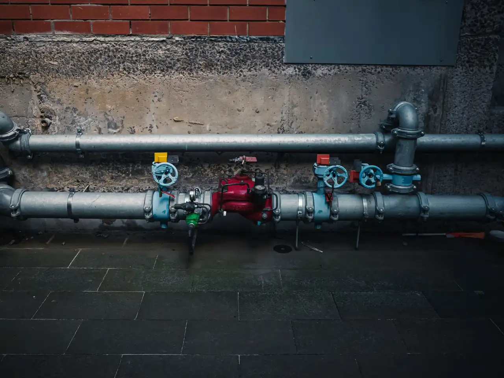

Sewer Line Repair Arlington Heights IL that stops backups
When waste water backs up into your basement or the yard starts smelling like a swamp, you need sewer line repair Arlington Heights IL residents can count on. We camera-inspect the line, show you exactly what is wrong, and fix it with trenchless sewer repair or a targeted dig. Same-day service across Cook County, including ZIP codes 60004 and 60005.
We protect floorsDrop cloths and plywood every time
We show the footageYou watch the monitor with us
We test before leavingFinal camera pass on every job
What Our Sewer Line Repair Includes
Every sewer line repair Arlington Heights IL job starts with a camera inspection and ends with a camera pass. The list below covers what is standard on our repairs. If your job needs a permit, a city inspection, or a larger excavation, we tell you before we start and price it in.
Camera Inspection and Report
We feed a RIDGID sewer camera through the cleanout and record the full lateral. You see the footage live and get a digital copy. The report marks depth, distance, and the exact failure point so the repair is targeted, not guesswork.
Root Cutting and Jetting
Before any repair, we cut roots with a hydro jetter at 3,000 to 4,000 PSI. That clears the pipe walls so the camera can see cracks and the repair crew can work in a clean line. Jetting is included on every repair job.
Spot Repair or Liner
If the damage is isolated, we cut out the bad section and replace it with PVC pipe and proper fittings. If the line is cracked along its length, we install a cured-in-place liner. Both options are quoted flat before work begins.
Permits and Inspection
Sewer repairs in Arlington Heights require a permit and a final inspection. We pull the permit, schedule the inspection, and meet the inspector on site. You do not have to chase paperwork or take time off work for the sign-off.
Site Protection and Cleanup
We lay drop cloths and plywood over floors and walkways before we start. Excavated soil goes on tarps, not your lawn. When we finish, we backfill, compact, and restore the surface as close to original as the repair allows.
Final Camera Pass and Summary
Before we leave, we run the camera again and show you a clear line. You get the footage and a written summary of what was repaired, what material was used, and what to watch for. That record is yours for future inspections or resale.
Homes and businesses.
The approach is the same for a home and a business. What changes is the access, the schedule and who needs the paperwork.
For Homes
We repair sewer laterals for homeowners and tenants across Arlington Heights. You get a camera inspection, a flat price, and a clean work area when we finish.
Basement floor drain backups
Slow drains in multiple rooms
Sewage smell in the laundry
For Businesses
We service sewer laterals for restaurants, salons, and property managers in Arlington Heights. Work is scheduled around your hours so you stay open and your tenants stay happy.
Grease-blocked kitchen laterals
Sidewalk line collapses
Quarterly jetting schedules
Sewer Line Repair Arlington Heights IL: What It Involves
A plain-language look at what Sewer Line Repair involves and when it is needed.
Sewer line repair Arlington Heights IL is the process of locating a failure in the main pipe that carries waste from your home to the municipal sewer and restoring it so water and solids flow away without backing up. We start with a sewer camera pushed through a cleanout, map the break or blockage, then choose the least invasive fix: a spot repair, a pipe liner, or a full section replacement. Most residential laterals run 4 to 6 inches in diameter and sit 3 to 8 feet underground, so accuracy matters before anyone digs.
In Arlington Heights, the freeze-thaw cycle from December through March shifts soil and stresses older clay and cast-iron laterals. Homes built before 1970 often have Orangeburg or vitrified clay pipe that cracks under root pressure from parkway maples and elms. If you are searching for sewer line repair near me Arlington Heights IL because the laundry drain gurgles or the basement floor drain burps, that is usually the first sign. We also handle emergency sewer repair Arlington Heights calls when a backup hits on a Sunday night.
A sewer camera tells you what the pipe actually needs before anyone digs.
What it is
Repairing the main pipe that carries waste from your home to the city sewer.
When you need it
Multiple drains back up, sewage smells indoors, or the yard has a soggy patch.
What to expect
Camera inspection, written options, repair day, and a final camera pass.
How Our Sewer Repair Process Works
From the first call to the final camera pass, here is what happens when you book sewer line repair Arlington Heights IL with us.
Call and Schedule
You call (224) 643-9856 or book online. We ask what is backing up, how many fixtures are affected, and whether you have a cleanout. Most Arlington Heights jobs get a same-day or next-morning window. You get a text when the tech is 30 minutes out.
Call
Schedule
Confirm
Camera Inspection
We pull the cleanout cap and feed a RIDGID sewer camera down the lateral. You watch the monitor with us. We mark the depth and distance of every crack, root mass, and bellied section. This takes 20 to 40 minutes and tells us whether you need a spot fix or a full replacement.
Camera
Inspect
Mark
Written Options
We give you two or three repair paths with flat pricing: spot repair, trenchless liner, or open-cut replacement. Each option lists what is included and how long it takes. No pressure, no same-day-only discount games. You pick what fits your budget and timeline.
Options
Pricing
Choose
Repair Day
We protect the work area with drop cloths and plywood, then excavate or set up the liner rig. Spot repairs take 3 to 5 hours. Trenchless liners run 4 to 6 hours including cure time. We keep the water off only as long as necessary and tell you before we shut it down.
Repair
Test
Restore
Final Camera Pass
Before we pack up, we run the camera again and show you a clear line. You get a digital copy of the footage and a written summary of the repair. If anything looks off, we fix it before we leave. That is the standard we hold on every job in Cook County.
Camera
Verify
Document
Tools and Methods We Use
Move across a circle, or focus it and press Enter, for an illustrative thermal view of the photograph.
RIDGID Sewer Camera
Pushed through the cleanout to record the inside of the lateral. Shows cracks, roots, bellies, and offsets on a monitor you can watch. The footage goes into your file.
Hydro Jetter
Delivers 3,000 to 4,000 PSI of water to scour grease, scale, and roots from the pipe walls. Used before camera inspections and before liner installs so the surface is clean.
Milwaukee Inspection Tools
Used for locating lines, checking depths, and documenting the job. The same brand our techs carry on service calls for electrical and lighting needs in tight trenches.
Pipe Cutter and Soldering Torch
For cutting out failed sections of copper pipe or PVC pipe and soldering new fittings. Used on spot repairs where the damaged section is accessible.
PEX Crimping Tool
For repiping supply lines when a sewer repair uncovers corroded copper. PEX tubing is faster to run and resists the scale that builds up in Arlington Heights water.
Thermal views are illustrative, generated from the photographs.
Methods
Leak Detection Equipment
Finds hidden supply-line leaks that saturate soil around the sewer lateral. Fixing the water source protects the sewer repair from soil movement.
Pressure Gauge
Checks water pressure before and after a repair. High pressure can stress fittings and supply lines, so we verify it is in the safe range before we leave.
Cured-in-Place Pipe Lining
A resin-saturated liner is pulled through the existing pipe and inflated against the walls. Once cured with heat or UV light, it forms a new pipe inside the old one. Typical liners cover 30 to 100 feet and cure in 2 to 4 hours.
Pipe Bursting
A bursting head is pulled through the old pipe, breaking it outward while pulling new HDPE pipe behind it. Used when the existing line is too deteriorated for a liner. Requires two access pits but no continuous trench.
Open-Cut Replacement
The traditional method: excavate the failed section, remove the old pipe, and install new PVC pipe with proper slope and bedding. Used for collapsed lines, severe bellies, or when the pipe depth makes trenchless impractical.
Hydro Jetting Before Camera
We jet the line at 3,000 to 4,000 PSI before every camera inspection. Grease and roots hide cracks, so a clean pipe gives an accurate diagnosis. This is standard on every repair estimate.
When Arlington Heights Homeowners Call Us
Scarsdale roots
A homeowner in Scarsdale notices the basement floor drain backs up when the washing machine empties.
We camera the lateral and find a root mass 22 feet from the cleanout. We jet the roots, then install a trenchless liner over the cracked section. The whole job takes one day, and the driveway stays intact.
Outcome: The laundry drains freely, the basement stays dry, and the camera pass shows a smooth liner with no root entry points.
Pioneer Park clay
A 1950s ranch near Pioneer Park has clay pipe that shifts every spring when the ground thaws.
We inspect the line each spring and jet it to remove roots. When the camera shows a separated joint, we replace that 10-foot section with PVC pipe and proper couplings. The repair is permitted and inspected.
Outcome: The line survives the next freeze-thaw cycle without backing up, and the homeowner avoids a full lateral replacement.
Business District grease
A restaurant in the Arlington Heights Business District has grease blocking the lateral under the sidewalk.
We jet the line at 4,000 PSI, camera it, and find a collapsed section under the concrete. We repair it with a spot fix and add a grease trap maintenance schedule to prevent a repeat.
Outcome: The kitchen drains flow at full capacity, the health inspector signs off, and the tenant stays open through the repair.
Lake Arlington rain
A homeowner near Lake Arlington gets sewage backing up after heavy rain because the water table rises.
We camera the line and find cracked joints letting groundwater in. We install a liner and check the backflow prevention assembly. If the assembly is failing, we repair or replace it.
Outcome: Rain no longer pushes sewage into the basement, and the backflow assembly passes its annual test.
Hancock Square smell
A property manager in Hancock Square has a tenant reporting a sewer smell in the laundry room.
We smoke-test the drain system and find a dry trap and a cracked vent pipe. We repair the vent, refill the trap, and camera the main lateral to confirm it is clear.
Outcome: The smell is gone, the tenant renews the lease, and the manager has a camera report for the building file.
ScarsdaleOld Arlington HeightsLake Arlington
How Sewer Repair Works in Arlington Heights
Arlington Heights sits on a mix of clay soil and older infrastructure, and that combination drives most of the sewer calls we run. The freeze-thaw cycle from December through March moves soil, which shifts pipe joints and opens cracks for roots. Homes built before 1970 often have vitrified clay or Orangeburg laterals that are already at the end of their life.
When you search for affordable sewer pipe fix in Arlington Heights, Illinois, the honest answer is that the fix depends on what the camera shows. A cracked joint in PVC pipe is a spot repair. A root-infested clay line is a liner or replacement. We also deal with high water tables near Lake Arlington and Creekside, where groundwater pushes into failed joints after heavy rain.
Cook County requires permits for sewer work, and we pull them on every job. If you need same-day sewer repair Arlington Heights IL because sewage is backing up, call (224) 643-9856 and we will tell you the soonest we can be there.
Scarsdale: Many 1950s and 1960s homes here have original clay laterals with mature parkway trees. Root intrusion is the most common call we run in this neighborhood.
Old Arlington Heights: Some of the oldest housing stock in the village. Clay and cast-iron pipe is common, and repairs often require careful excavation near mature landscaping.
Lake Arlington: High water table after spring rain. Cracked joints let groundwater in, which overloads the sewer and can cause backups even when the pipe is not fully blocked.
Arlington Heights Business District: Restaurants and commercial kitchens produce grease that coats the lateral. We jet these lines on a schedule and repair the damage grease causes over time.
Pioneer Park: A mix of mid-century ranches and newer builds. We see both failing clay pipe and PVC pipe with root intrusion at the joints. Camera inspection tells us which.
Freeze-thaw soil movement from December through March: Shifts pipe joints and opens cracks that roots and groundwater exploit. Repairs done in spring often address damage that started during the winter.
IllustrativeThe thermal view is generated from the photograph. It is not a measurement. Drag the handle, or use the arrow keys once it is focused.
Root-Blocked Clay Lateral in Scarsdale
Before: A 1958 ranch had slow drains for months. The homeowner snaked the line twice with a drain snake, but the backup returned. The basement floor drain burped every time the washer ran.
After: We cameraed the line and found a root mass at 22 feet. Jetted it out, then installed a trenchless liner over the cracked clay. The final camera pass showed a smooth pipe with no root entry. Job took one day.
Annual hydro jetting and a camera check each spring.
Collapsed PVC Under a Driveway in Old Arlington Heights
Before: A 1920s home had a collapsed section of clay pipe under the concrete driveway. Sewage was backing into the basement. Two other contractors quoted a full driveway tear-out.
After: We used pipe bursting to pull new HDPE through the old clay from two small pits in the parkway. The driveway stayed intact. The line was camera-verified and passed Cook County inspection the same week.
Keep the two access pits marked and accessible. We recommend a camera check every two years to confirm the new pipe is holding its slope.
Grease-Blocked Commercial Lateral on Miner Street
Before: A restaurant in the Business District had grease blocking the lateral under the sidewalk. The kitchen drains were backing up during dinner service, and the health inspector was due in a week.
After: We jetted the line at 4,000 PSI, cameraed it, and found a collapsed section under the concrete. Repaired it with a spot fix in two days. The kitchen passed inspection and stayed open through the repair.
Quarterly hydro jetting and a grease trap maintenance log. We schedule the jetting around the restaurant's closed hours so service is not interrupted.
Sewer Problems We Fix in Arlington Heights
Most sewer calls start with one of these five symptoms. Each one has a different cause and a different repair, which is why we camera the line before quoting anything.
Multiple backupsMultiple drains backing up at onceWhen the toilet, shower, and laundry all drain slowly, the blockage is in the main lateral, not the individual fixtures. Ignoring it leads to sewage on the floor and potential health hazards. We camera the main line from the cleanout, locate the blockage or break, and clear it with a hydro jetter. If the camera shows a crack or root entry point, we quote a spot repair or liner so the backup does not return next month.

Sewer smellSewage smell in the basementA persistent sewer odor means gas is escaping through a dry trap, a cracked pipe, or a failed wax ring. It is a warning that the line is not sealed and roots or groundwater are entering. We smoke-test or camera the line to find the entry point. Common fixes include replacing a failed wax ring, repairing a cracked section of PVC pipe, or sealing a floor drain trap. We also check the vent stack for blockages.
Soggy yardSoggy patch in the yardA wet, smelly spot over the sewer lateral means raw sewage is leaching into the soil. It can contaminate groundwater and kill grass in a widening circle. This is a health issue, not just a landscaping one. We excavate the wet area, camera the pipe, and repair the failed section. If the pipe is collapsed, we replace that run with new PVC pipe and proper slope. We backfill and compact the soil so the yard settles evenly.
Gurgling drainsGurgling toilets and slow drainsGurgling means air is being pulled through the trap because the line is partially blocked. It is the earliest warning of root intrusion or a bellied pipe. We camera the line and measure the blockage distance. If roots are the cause, we jet them out and repair the entry point. If the pipe has bellied, we discuss trenchless options or open-cut replacement depending on the severity.
Repeat clogsRepeated clogs in the same drainA drain that clogs every few months is not a usage problem. It is a pipe problem, usually a crack, offset joint, or root mass that catches debris. Snaking it only clears a channel through the blockage. We jet the line to bare pipe, then camera it. The camera shows what the snake cannot: cracks, offsets, and root hairs. We repair the actual defect so you stop paying for the same drain clearing every season.
Why Fix the Line Before It Fails
A camera-verified repair that keeps sewage out of your home.
Stop Raw Sewage Backups
A cracked lateral lets groundwater and roots in, and waste out. We seal or replace the failed section so sewage stays inside the pipe, not on your basement floor. Most spot repairs are completed in one day, and you can use your fixtures again the same evening.
Trenchless Saves Your Yard
Trenchless sewer repair Arlington Heights means we pull a resin liner or burst a new pipe through the old one from two small access pits. Your driveway, walkway, and mature landscaping stay intact. Typical liner installs cover 30 to 100 feet and cure in 2 to 4 hours.
Cut Root Intrusion for Good
Roots find a 1/8-inch crack and turn it into a hairball of fibers. We cut them with a hydro jetter at 3,000 to 4,000 PSI, then repair the pipe so they cannot re-enter. For root intrusion sewer repair Arlington Heights 60004 homeowners get a camera pass afterward to prove the line is clear.
Protect Your Home's Value
A documented sewer repair with photos and a clean camera pass is a selling point at inspection. Buyers walk away from homes with mystery drain issues. We hand you the before-and-after footage so the next owner knows exactly what was fixed and when.
What you receive
Clear records you can keep and share.
Camera report
Digital footage of the line before and after
Repair summary
Written record of what was fixed and materials used
Permit copy
Copy of the filed permit and inspection sign-off
Photo log
Images of the excavation and finished repair
Repair vs Replace: What the Camera Decides
The camera shows whether the pipe can be repaired in place or needs a new section.
Spot Repair
Isolated crack or break in an otherwise sound pipe.
One section replaced
Fastest option
Lowest cost
Trenchless Liner
Cracks along the length of the pipe with no collapse.
Two small pits
No driveway tear-out
Cures in hours
Open-Cut Replace
Collapsed, bellied, or badly offset pipe.
Full section removed
New PVC installed
Longest lifespan
What we work with
PVC pipe
Clay pipe
Cast iron
HDPE
Pipe fittings
Sewer camera
Hydro jetter
Shut-off valves
Service ZIP codes.
A list like this tells people straight away whether you cover their street. Not listed? Call and ask: it only takes a minute.
Our basement floor drain started burping every time the washer ran. Five Star Plumber LLC cameraed the line and found a root mass 22 feet out. They jetted it, then installed a trenchless liner the next week. No digging in the yard, and the camera pass at the end showed a clean pipe. Price was exactly what they quoted.
The 1920s clay lateral under our driveway finally cracked. I was sure we would need to tear up the concrete. They explained the trenchless option, showed me the camera footage, and had the liner cured in one day. Two small pits in the parkway, that was it. Driveway untouched.
A restaurant tenant had a grease-blocked lateral backing up into the kitchen. Five Star Plumber LLC responded the same afternoon, jetted the line, and found a collapsed section under the sidewalk. They repaired it in two days with minimal disruption to the tenant. We now have them on a quarterly jetting schedule.
Frequently Asked Questions
Those 2026 ranges include camera inspection, permits, and restoration of the work area. We give you a flat written price before any digging starts.
Yes, in most cases. Trenchless sewer line repair Arlington Heights IL uses a resin liner pulled through the existing pipe and cured in place, or a pipe-bursting head that pulls new HDPE through the old line. We only need two small access pits, usually at the cleanout and near the city connection. If the pipe is collapsed or badly offset, open-cut is the honest answer.
The top four causes we see are root intrusion from parkway trees, freeze-thaw soil movement, aging clay or cast-iron pipe, and grease or wipes buildup that masks a crack. Homes near Lake Arlington and Creekside also deal with high water tables that push groundwater into failed joints. A camera inspection tells us which one you have in about 30 minutes.
A spot repair takes 3 to 5 hours on site. A trenchless liner runs 4 to 6 hours including cure time. Open-cut replacement of a 50-foot lateral is usually a two-day job: day one for excavation and pipe, day two for backfill and restoration. We tell you the expected timeline before we start so you can plan around the water shutoff.
Sewage backup will not fix itself. Call (224) 643-9856 and we will camera your line, show you the problem, and give you a flat price for the repair. Same-day and emergency windows available across Arlington Heights and Cook County.